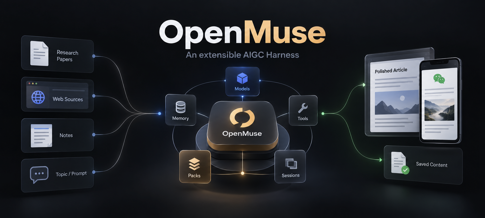
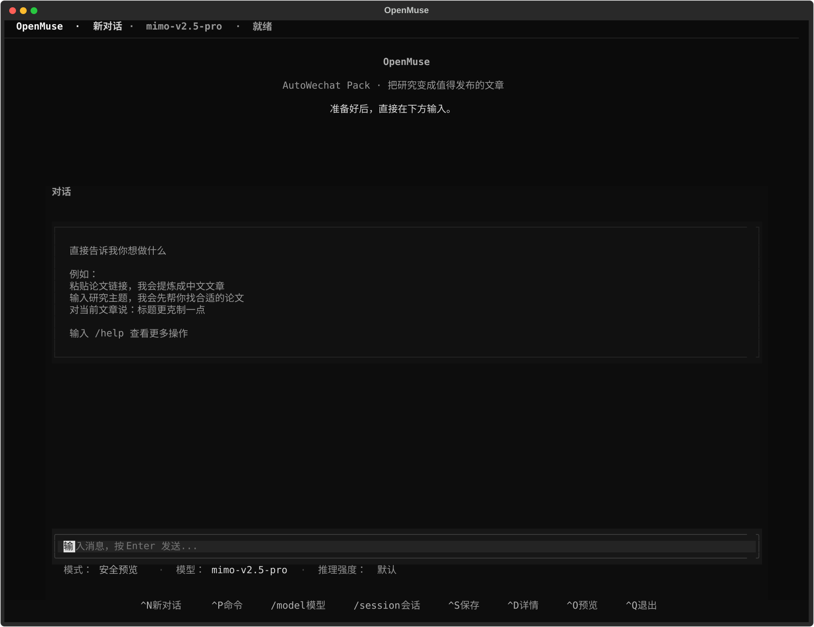
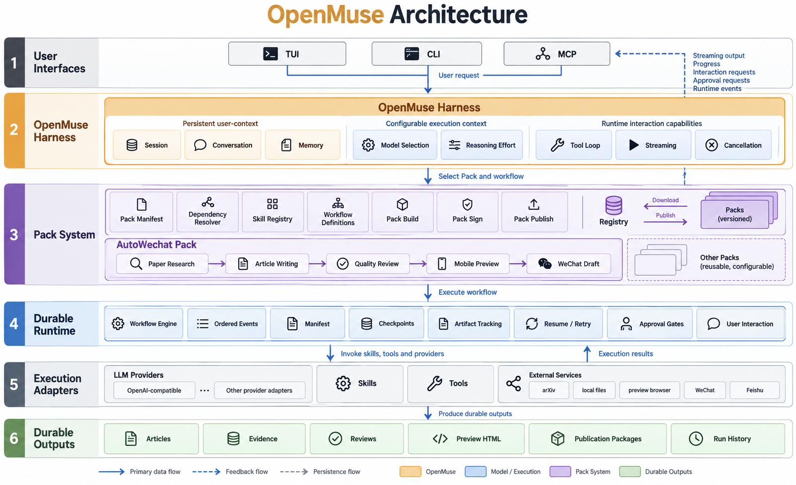

OpenMuse
可扩展的 AIGC Harness，从研究材料到可发布内容
Composable AI workflows for research, writing, review, and publishing
功能特性 • 快速开始 • 安装 • CLI 命令 • MCP 服务 • 配置

中文 | English

--- ## ✨ 功能特性OpenMuse 是一个可扩展的 AIGC Harness，用模型、工具、记忆、Runtime 和 Pack 协同完成内容生产。当前的第一个官方 Pack 是 AutoWechat：把研究论文转成可发布的中文公众号文章。
当前 Python 模块和 smearglepaper 命令作为兼容入口保留；新安装也提供 openmuse 命令。
🧭 架构概览
OpenMuse 把用户界面、可复用 Pack 和可恢复 Runtime 放在同一条执行链上。模型、Skills、Tools 和外部服务都是可替换的适配器；Manifest、Checkpoint、Artifact 和 Session 负责保留过程与结果。

当前官方 Pack：AutoWechat。它运行在 OpenMuse Harness 之上，负责：
论文或主题 → 选题 → 论文理解 → 中文文章 → 质量审阅 → 手机预览 → 可选微信草稿
📄 论文收集
|
📝 文章生成
|
🔍 质量审查
|
📱 微信发布
|
🚀 快速开始
Agent 原生 Runtime（0.2）
无参数启动 OpenCode 风格交互工作台；CLI、TUI 与 MCP 共用同一个可恢复 Runtime：
openmuse
openmuse run paper-to-article --paper-url https://arxiv.org/abs/1706.03762
openmuse agent "解读这篇论文并生成公众号草稿" --paper-url https://arxiv.org/abs/1706.03762
openmuse run paper-research --offline-example --workspace ./demo-workspace
openmuse runs list --json
TUI 以“论文或主题 → 候选确认 → 文章 → 对话修改 → 手机预览”为主流程。主题输入会展示 3 篇候选论文；粘贴论文链接会直接进入阅读与写作。文章完成后按 Ctrl+O 打开手机尺寸预览，后续修改会自动刷新。
每次执行都会保存 manifest.json、顺序事件流、检查点与带哈希的 Artifact。真实微信写入默认禁用；使用 --real 后仍会停在审批门禁，需显式执行 openmuse approve RUN_ID approve-publish。详见 CLI 与 Runtime。
① 一键运行完整流水线
openmuse agent-run --topic agents --days 30 --top-k 5
② 分步运行
openmuse preflight # 检查环境
openmuse collect --topic agents --days 30 --max-results 50 # 收集论文
openmuse rank --top-k 5 # 排序论文
openmuse write --paper-id 2401.00001 # 生成文章
openmuse review-article data/articles/2401.00001.md # 审查文章
openmuse improve-article data/articles/2401.00001.json # 优化文章
③ 论文深度解读 Agent
openmuse agent "解读这篇论文" --paper-url https://arxiv.org/abs/1706.03762
📦 安装
前置条件：Python 3.10+，推荐使用 Conda
Conda（推荐）
conda env create -p ./.conda/envs/smearglepaper -f environment.yml
conda run -p ./.conda/envs/smearglepaper python -m pip install -e ".[dev]"
📋 Pip 安装方式 — 点击展开
python -m venv .venv
source .venv/bin/activate # Windows: .venv\Scripts\activate
python -m pip install -e ".[dev]"
# 验证安装
openmuse preflight
旧的 smearglepaper 命令仍然兼容，可用于已有脚本和历史部署。
🛠️ CLI 命令
| 命令 | 说明 |
|---|---|
smearglepaper topics | 列出可用主题预设 |
smearglepaper | 启动 Agent 原生 TUI |
smearglepaper run paper-to-article | 运行可恢复的论文写作工作流 |
smearglepaper run paper-to-wechat | 生成默认 dry-run、真实写入需审批的微信草稿 |
smearglepaper runs list | 查看、恢复、重试或取消 Runtime 运行 |
smearglepaper collect-arxiv | 收集 arXiv 论文 |
smearglepaper collect-blogs | 收集 AI 博客 |
smearglepaper collect-github | 收集 GitHub Trending |
smearglepaper rank-papers | 排序论文 |
smearglepaper ingest-paper | 读取论文 |
smearglepaper generate-article | 生成文章 |
smearglepaper review-article | 审查文章质量 |
smearglepaper improve-article | 优化文章 |
smearglepaper create-wechat-draft | 兼容层：生成微信草稿 |
smearglepaper agent | 以自然语言启动 Runtime 工作流 |
smearglepaper daily-digest | 每日摘要 |
smearglepaper trend-analysis | 趋势分析 |
主题预设：latest_ai · agents · nlp · nlp_semantics · nlp_syntax · nlp_pragmatics
🔧 MCP 服务
OpenMuse 可作为 MCP 服务器运行，与 AI Agent 无缝集成：
python -m mcp_server.server
📋 可用 MCP 工具列表 — 点击展开
| 工具 | 说明 |
|---|---|
collect_papers |
收集论文 |
collect_blogs |
收集博客 |
rank_latest |
排序论文 |
read_paper |
读取论文 |
write_article |
生成文章 |
review_article |
审查文章 |
improve_article |
优化文章 |
create_draft |
创建微信草稿 |
publish_article |
发布文章 |
详见 docs/MCP.md。
cp .env.example .env
编辑 .env：
# LLM 配置（必填）
OPENAI_BASE_URL=https://api.deepseek.com
OPENAI_API_KEY=your-api-key
OPENAI_MODEL=deepseek-chat
# 微信公众号配置（可选，仅发布功能需要）
WECHAT_APP_ID=your-app-id
WECHAT_APP_SECRET=your-app-secret
💡 未配置 LLM 时，OpenMuse 使用本地模板兜底，仍可离线测试完整工作流。
📚 深入文档
📁 项目结构
SmearglePaper/
├── src/
│ ├── smearglepaper/ # 核心业务逻辑
│ └── mcp_server/ # MCP 服务器
├── data/
│ ├── papers/ # 收集的论文
│ ├── articles/ # 生成的文章
│ ├── covers/ # 封面图
│ └── figures/ # 提取的图表
├── workspace/
│ ├── paper_writing/ # 论文写作工作区
│ └── tasks/ # 任务管理
├── skills/ # 工作流技能
├── prompts/ # LLM 提示词
└── tests/ # 测试
🧪 开发
开发环境、测试与调试 — 点击展开
# 运行测试
python -m pytest -q
# 检查环境
python -m smearglepaper preflight
# 测试 MCP 导入
python -c 'import mcp_server.server; print("mcp import ok")'
🤝 贡献
欢迎所有形式的贡献！
- Fork 本仓库
- 创建特性分支（
git checkout -b feature/amazing-feature） - 提交更改（
git commit -m 'feat: add amazing feature'） - 推送到分支（
git push origin feature/amazing-feature） - 创建 Pull Request
📄 许可证
MIT License — 详见 LICENSE
🙏 致谢
- arXiv — 论文来源
- DeepSeek — LLM API
- WeChat Official Account API — 微信公众号接口
⭐ 如果这个项目对你有帮助，请给个 Star 支持一下！
Made with ✨ by GetIT-Sunday using ReadmeMagic
---